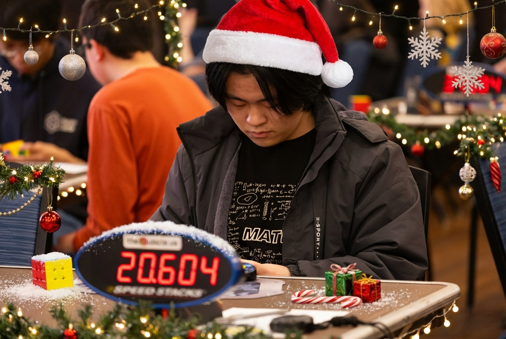

01 · Measure
Uncertainty quantification for LLMs
When does a model not know, and why?
I study how to tell an ambiguous question apart from missing knowledge, including for black-box models that expose only their text outputs.

Third-year Ph.D. student at RPI, advised by Prof. Qiang Ji, also working with Prof. Yao Ma
I work on trustworthy LLMs and agents: finding out when a model does not know, why, and what it should do next.
My research focuses on making large language models (LLMs) and LLM agents more reliable and trustworthy.
When does a model not know, and why?
I study how to tell an ambiguous question apart from missing knowledge, including for black-box models that expose only their text outputs.
What should the model do once it knows it is unsure?
I use these signals to detect hallucinations, to decide when to answer, abstain, ask for clarification, or retrieve more information, and to make reasoning and RAG pipelines more reliable.
How can prior knowledge make models more robust?
Earlier, I worked on Bayesian deep learning and knowledge-augmented models for computer vision, where domain knowledge shapes both the prior and the likelihood.
TL;DRA two-level ensemble estimates an LLM's uncertainty from its text outputs alone and splits it into aleatoric and epistemic parts. No weights or logits are needed, and AUROC is comparable to or better than white-box baselines.
Uncertainty quantification (UQ) is essential for building reliable and trustworthy systems with large language models (LLMs). However, conventional Bayesian or ensemble-based UQ methods are computationally intractable at the scale of modern LLMs and often require white-box access to model parameters or logits. This paper introduces a two-level ensemble framework for black-box uncertainty estimation that operates entirely at inference time and is theoretically grounded in the law of total variance, decomposing total predictive uncertainty into aleatoric and epistemic components. The inner ensemble captures stochasticity and ambiguity through repeated stochastic decoding, while the outer ensemble approximates parameter-driven uncertainty via semantically perturbed prompts that act as proxy samples from an implicit posterior over plausible inputs. By measuring variability in a continuous embedding space, our framework yields interpretable and scalable uncertainty estimates across diverse LLMs. We further provide finite-sample guarantees for our uncertainty estimators, and bound the gap with Bayesian estimators. Experiments on standard benchmarks show that our black-box estimator achieves AUROC comparable to or surpassing state-of-the-art white-box baselines, while providing a meaningful decomposition that distinguishes linguistic ambiguity from knowledge uncertainty.
TL;DRDomain knowledge enters Bayesian deep learning twice: first as an informative prior, then as an adaptive likelihood during inference. This improves accuracy, robustness, adaptation and uncertainty estimation over Bayesian and knowledge-augmented baselines.
Bayesian deep learning (BDL) integrates Bayesian inference with deep learning, improving predictive performance while enabling principled uncertainty quantification. However, existing BDLs often rely on non-informative random priors, limiting the benefits of Bayesian inference. In contrast, knowledge-augmented deep learning explicitly injects domain knowledge during training, yet lacks a probabilistic foundation. In this paper, we propose a knowledge-augmented BDL framework that integrates domain knowledge both as an informative prior and as an adaptive likelihood under a unified two-stage hybrid formulation. In the first stage, we learn a knowledge-informed prior p(θ|K) by pre-training a model to satisfy domain-specific constraints. In the second stage, we perform Bayesian inference on task data with an adaptive knowledge likelihood p(K|θ,D), which dynamically enforces these constraints during optimization. This unified framework enables knowledge to guide both initialization and training, significantly improving prediction accuracy, robustness, adaptation and uncertainty estimation. Experiments on various computer vision tasks, including semi-synthetic and real-knowledge scenarios, demonstrate that our two-stage framework consistently outperforms state-of-the-art Bayesian and knowledge-augmented baselines.
NewThe paper, code, poster and slides of my NeurIPS 2026 paper are now online. I will present the poster in Sydney on Dec 10 (5–8 PM AEDT, Hall 1-4). Come say hi!
My first-authored paper from my IBM Research internship, Black-Box Uncertainty Quantification for Large Language Models via Ensemble-of-Ensembles, was accepted to NeurIPS 2026! Many thanks to my collaborators at IBM Research.
I completed my Applied Science internship at Microsoft and returned to RPI to continue my Ph.D. journey as a third-year student.
I was selected as an ICML 2026 Golden Reviewer.
My CVPR 2026 paper Towards Knowledge-augmented Bayesian Deep Learning For Computer Vision was selected as a Highlight.
I arrived in Redmond and officially started my Applied Science internship at Microsoft.
My first-authored paper Towards Knowledge-augmented Bayesian Deep Learning For Computer Vision was accepted to CVPR 2026.
My first-authored paper Black-Box Uncertainty Quantification for Large Language Models via Ensemble-of-Ensembles was accepted to the AAAI 2026 AIR-FM Workshop.
I completed my summer externship at IBM Research.
I joined IBM Research as a visiting student researcher working on uncertainty quantification and reasoning with LLMs under Dr. Debarun Bhattacharjya.
I started my Ph.D. journey at RPI.
I organized a seminar titled "AI: Optimization, Theory & Responsibility" at SUSTech; details at the seminar page.
I started my journey as a visiting student in Prof. Chao Wang's group at SUSTech.
I graduated from SUSTech.
I accepted the offer from RPI and will begin my Ph.D. under Prof. Qiang Ji.
I’m a passionate fan of MLB, NPB, and Japan’s National High School Baseball Tournament (Koshien). My favorite NPB team is Hokkaido Nippon-Ham Fighters, where Shohei Ohtani began his professional career in 2013. I’m also a big supporter of Ōmi High School, a rising baseball powerhouse from Shiga Prefecture. You can check out some highlights here — their blue uniforms shine brighter than the August sky.
I led a project analyzing MLB Statcast data in my undergraduate Data Science Project course: Slides, Report.
I am a speedcuber who has participated in over 30 official competitions, with Square-1 being my best event. I am currently ranked No. 3 in mainland China (as of Nov 2025) and earned two bronze medals at the Chinese National Championships in 2017 and 2018. You can find recordings on my Bilibili channel, and official results on my WCA profile.
I devoted much of my high school and early university years to Rubik's Cube practice. In May 2021, I achieved my personal best in the Square-1 event and reached No. 2 in mainland China. Through years of pursuing something I truly love, I've learned perseverance — a quality I now bring into my research with the same passion and dedication.
I’m from Baoji, Shaanxi Province, a region that served as the heart of ancient China for much of its history. I enjoy reading about its rich past, especially the Pre-Qin era and the vibrant Warring States period, known for the flourishing of the Hundred Schools of Thought.
I am looking for research / applied scientist internships for Summer 2027. Please feel free to reach out via email if you think there might be a fit!